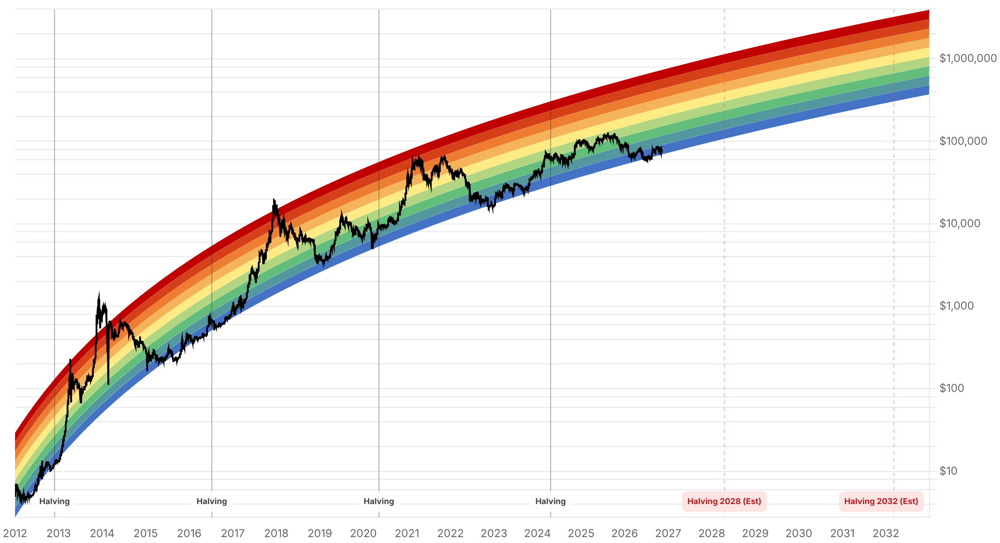

Reporte financiero
BTC cotiza en vivo a USD 73.450,45 (07:25 UTC, -0,64% intradía vs. cierre previo de USD 73.925,19), extendiendo la lenta caída de los últimos días dentro del rango USD 73.000-74.000 que sostiene desde el IPC caliente del 10-nov. La novedad principal desde el reporte de ayer es que el evento binario que estaba pendiente ya se resolvió: MSCI confirmó el 11 de noviembre (publicado poco después de las 17:00 ET) la eliminación de Strategy (MSTR) de su índice MSCI USA -lo que también la saca de MSCI World y ACWI-, además de Metaplanet (MSCI Japan Small Cap), Upexi (MSCI USA Micro Cap), Yellow Cake (MSCI United Kingdom Small Cap) y Skel Fjárfestingafélag de Islandia (MSCI Iceland Frontier Markets Small Cap). Los cambios entran en vigor al cierre del 30 de noviembre. SharpLink (tesorería de Ethereum) queda en lista de observación, sin exclusión inmediata. Strategy había argumentado en una carta previa que la exclusión 'no tendría un impacto significativo' en su negocio -los fondos ligados a MSCI poseen ~13 millones de acciones, 3,1% de las acciones básicas en circulación-, pero JPMorgan estima hasta USD 2.800M en ventas pasivas forzadas (hasta USD 8.800M si otros proveedores de índices siguen el mismo camino, aunque esa cifra data de la propuesta original de MSCI, no del filtro de octubre). La reacción de MSTR fue moderada: cerró en USD 122,35 (+1,06%) y luego cayó entre 1,5% y 2,5% en el after-hours según la fuente. Los flujos de ETFs de bitcoin siguen deteriorándose: el 10 de noviembre (último dato de tftc.io) salieron USD 95,0M netos (IBIT -78,2M, Fidelity FBTC -36,8M, parcialmente compensados por MSBT +20,0M), séptima sesión consecutiva de salidas -extendiendo la racha de seis sesiones reportada ayer- y ~USD 1.600M en salidas netas en lo que va de noviembre (7 sesiones). El Fear & Greed Index se mantiene prácticamente plano, de 29 ayer a 28 hoy ("Fear" en ambos casos). CryptoQuant reportó que su 'Bull Score' cayó a 0 el 11 de noviembre -"lo más bajista que puede estar", según el analista Julio Moreno-, aunque otro analista (Daan Crypto Trades) matiza que el posicionamiento apalancado elevado no dice nada sobre la dirección de un eventual squeeze. Sobre la Fed, no hay un dato puntual nuevo verificado desde ayer: los mercados siguen tratando una subida de 25pb en diciembre como muy probable (en el rango de ~80% según distintas fuentes, con cifras dispersas entre 67% y 97% según la fecha y el proveedor consultado, por lo que no se fija un número único). Sobre Nvidia/Jensen Huang: el plazo del 11 de noviembre para que Huang aceptara o propusiera una fecha alternativa a la reunión a puertas cerradas del 18 de noviembre con los presidentes de tres comités de la Cámara (Mast, Moolenaar, Crawford) ya venció sin que se encontrara confirmación pública de su respuesta; el próximo evento verificable es el reporte de resultados de Nvidia el 17 de noviembre, un día antes de la reunión propuesta. Sin novedades verificadas desde el reporte de ayer en: negociaciones con Irán (último dato confirmado es del 7-nov, sin acuerdo en Doha), Clarity Act, BTCPay Server, la apelación del Reino Unido sobre los 61.000 BTC y Cantor Fitzgerald.
MSCI publicó su revisión de índices de noviembre de 2026 el 11 de noviembre, poco después de las 17:00 ET, confirmando lo que el reporte de ayer dejaba pendiente: Strategy (MSTR) sale del MSCI USA Index (y por extensión de MSCI World y ACWI) tras ser reclasificada como emisor 'no operativo' bajo el nuevo filtro adoptado en octubre. También se excluyen Metaplanet (MSCI Japan Small Cap), Upexi (MSCI USA Micro Cap), Yellow Cake (MSCI United Kingdom Small Cap) y Skel Fjárfestingafélag de Islandia (MSCI Iceland Frontier Markets Small Cap). SharpLink (tesorería de Ethereum), TON Strategy Company y Solana Company -mencionadas en listas de observación previas- no aparecen entre las exclusiones confirmadas; SharpLink queda en observación. Los cambios entran en vigor al cierre del 30 de noviembre. Strategy había argumentado en una carta de agosto que la medida 'no tendría un impacto significativo' en su negocio y que los fondos ligados a los índices globales de MSCI poseen cerca de 13 millones de sus acciones (3,1% de las acciones básicas en circulación) -menos que el volumen de un día de operaciones, según la compañía-. JPMorgan había estimado hasta USD 2.800M en ventas forzadas de fondos pasivos solo por Strategy (hasta USD 8.800M si otros proveedores de índices siguieran el mismo criterio), aunque esa cifra corresponde a la propuesta original de MSCI de noviembre del año pasado, no específicamente al filtro de no-operativos adoptado en octubre. La reacción inmediata en MSTR fue moderada y mixta entre fuentes: cerró la sesión regular en USD 122,35 (+1,06%) y luego cayó entre 1,5% (Bitcoin Magazine) y 2,5% (Reuters, vía FXStreet) en operaciones extendidas -la exclusión de un índice no implica deslistado ni obliga a Strategy a vender sus bitcoins.
El 10 de noviembre (último dato disponible de tftc.io) los ETFs de bitcoin al contado registraron -USD 95,0M netos: IBIT (BlackRock) lideró con -USD 78,2M, Fidelity (FBTC) con -USD 36,8M, parcialmente compensados por +USD 20,0M de entradas en MSBT (Morgan Stanley). Esto extiende a siete la racha de sesiones consecutivas con salidas netas (el reporte de ayer registraba seis, hasta el 9 de noviembre), y acumula -USD 1.600M en lo que va de noviembre (7 sesiones hábiles de dato), con un único día de entradas netas en todo el mes (+USD 74,6M el 4 de noviembre). Por fondo en lo que va del mes, IBIT lidera las salidas con aproximadamente -USD 1.500M, mientras Fidelity (FBTC, +USD 56,3M) y Morgan Stanley (MSBT, +USD 45,4M) son los únicos con flujo neto positivo relevante.
El analista de CryptoQuant Julio Moreno reportó el 11 de noviembre que el 'Bitcoin Bull Score' del proveedor cayó a 0, calificándolo como 'lo más bajista que puede estar'. En paralelo, el analista independiente Daan Crypto Trades señaló que el interés abierto de bitcoin medido en BTC está de nuevo en su nivel más alto desde 2021-2023, pero advirtió que 'eso no dice nada sobre en qué dirección debería ir ese squeeze' -es decir, el apalancamiento elevado por sí solo no anticipa la dirección del próximo movimiento brusco. Datos de CryptoQuant (vía el mismo analista) muestran que el interés abierto de BTC-USDT en Binance cayó de USD 9.400M a USD 7.200M desde mediados de octubre, pero solo ~12% de las posiciones se cerraron en términos de BTC -sin un evento de liquidación masiva en un solo día, a diferencia de la caída de febrero (de USD 87.000 a USD 67.000, ~20% de posiciones cerradas en días) o la de junio-. Las tasas de financiamiento siguen positivas, lo que sugiere que los traders siguen abriendo posiciones largas apalancadas incluso con el precio cayendo. Las reservas de los mineros bajaron a ~1,19M BTC, su nivel más bajo desde 2009, y los flujos hacia exchanges alcanzaron un máximo de nueve meses (Binance recibió ~2.000 BTC en un día) -aunque el movimiento de monedas a un exchange no prueba que se hayan vendido.
Sobre la Fed, no se encontró un dato puntual nuevo y verificado desde el reporte de ayer -las fuentes disponibles para la probabilidad de una subida de 25pb en diciembre vía CME FedWatch son inconsistentes entre sí (cifras dispersas entre ~67% y ~97% según la fecha y el proveedor), por lo que se prefiere no fijar un número nuevo y mantener la lectura cualitativa de 'alza considerada muy probable' ya reportada. Sobre Nvidia, el plazo del 11 de noviembre para que Jensen Huang aceptara la reunión a puertas cerradas del 18 de noviembre (o propusiera una fecha alternativa) con los presidentes de los comités de la Cámara Brian Mast, John Moolenaar y Rick Crawford -sobre sus contactos con la ejecutiva de Megaspeed Alice Huang y las salvaguardas antiespionaje de Nvidia- ya venció; no se halló confirmación pública de si Huang aceptó, propuso otra fecha o rechazó la solicitud. El próximo evento verificable es el reporte de resultados de Nvidia el 17 de noviembre, un día antes de la fecha propuesta para el briefing. En Irán, el último dato confirmado (7 de noviembre) sigue siendo que los negociadores salieron de Doha sin acuerdo tras tres días de conversaciones mediadas por Qatar, con una propuesta en borrador circulando pero los mismos puntos de fricción (Irán exige fin del bloqueo a sus puertos, sanciones y fondos congelados liberados antes de negociar el programa nuclear; EE.UU. exige concesiones nucleares primero). No se encontró cobertura verificada más reciente. Tampoco hay desarrollos nuevos verificados en la Clarity Act, la vulnerabilidad de BTCPay Server, la apelación del Reino Unido sobre los 61.000 BTC, ni Cantor Fitzgerald.
| Periodo | Valor |
|---|---|
| 6 nov | 75746.93 |
| 7 nov | 75747.58 |
| 8 nov | 74584.65 |
| 9 nov | 75223.15 |
| 10 nov | 73720.12 |
| 11 nov | 73675.33 |
| 12 nov (en vivo) | 73450.45 |
| Periodo | Valor |
|---|---|
| Hoy | 28 |

“Our Bitcoin Bull Score is at 0, the most bearish it can be.”
“Keep in mind, this says nothing about which direction that squeeze should be in.”
El evento binario de MSCI ya se resolvió: Strategy, Metaplanet, Upexi, Yellow Cake y Skel Fjárfestingafélag quedan fuera de sus respectivos índices MSCI al cierre del 30 de noviembre, con SharpLink en observación pero sin exclusión inmediata. El foco de corto plazo pasa a vigilar si los fondos indexados ejecutan las ventas forzadas antes de esa fecha y cómo reacciona MSTR en las próximas sesiones (la reacción inicial fue moderada, -1,5% a -2,5% en after-hours). En el plano técnico del propio BTC, el soporte más cercano sigue en el entorno de USD 73.500, con el siguiente nivel relevante en USD 72.000 (una ruptura sostenida podría exponer USD 70.000); al alza, las referencias son la media móvil de 9 días (~USD 75.565) y la de 21 días (~USD 77.633) -ambas por encima del costo base de los tenedores de corto plazo (~USD 75.700, sin cambios desde hace varios reportes).
La racha de salidas de ETFs se extiende a siete sesiones consecutivas (~USD 1.600M en lo que va de noviembre) y el 'Bull Score' de CryptoQuant cayó a su mínimo posible (0) el 11 de noviembre, dos señales que apuntan a demanda institucional y posicionamiento débiles -aunque un analista independiente matiza que el alto interés abierto apalancado no anticipa por sí solo la dirección del próximo movimiento. El giro hawkish de la Fed hacia una probable subida de 25pb en diciembre sigue como viento en contra de fondo, sin un dato puntual nuevo hoy que lo confirme o lo matice. El escándalo de Nvidia (con el plazo del 11-nov ya vencido sin respuesta pública de Huang) y las negociaciones con Irán (sin acuerdo desde el 7-nov) siguen como telón de fondo de sentimiento de riesgo general, no como catalizadores directos de bitcoin.
Sin cambios en los objetivos de precio de largo plazo ya reportados en ediciones anteriores (Citigroup, Bernstein, Standard Chartered, Tom Lee, NYDIG, Armstrong, piso de costo de producción de JPMorgan en USD 94.000 -muy por encima del precio spot actual-). BTC sigue muy por debajo de su máximo de 52 semanas de USD 107.428. A diferencia de reportes anteriores, el riesgo de exclusión de índices para las tesorerías corporativas de bitcoin ya no es hipotético: con la confirmación de MSCI, el precedente queda sentado para otros proveedores de índices y para otras tesorerías en lista de observación (SharpLink, TON Strategy Company, Solana Company, DeFi Development Corp.), lo que JPMorgan había cuantificado en hasta USD 8.800M de salidas pasivas si el criterio se generaliza.
Con la exclusión de MSCI ya confirmada (no especulativa), el riesgo pasa de 'si ocurrirá' a 'cómo se ejecuta': los fondos indexados deben vender sus ~13 millones de acciones de Strategy antes de esa fecha. Vigilar volumen y precio de MSTR en las próximas sesiones, y si otras tesorerías en lista de observación (SharpLink, TON Strategy Company, Solana Company) reciben tratamiento similar en futuras revisiones.
Siete sesiones consecutivas de salidas y ~USD 1.600M en noviembre son una señal más persistente que el ruido de precio intradía. Combinado con el Bull Score de CryptoQuant en 0, el cuadro de demanda institucional se ve débil, aunque no hay un evento de liquidación masiva como en episodios previos (caída de febrero o junio) que sugiera capitulación forzada.
El plazo del 11 de noviembre para que Huang respondiera a la solicitud de los tres comités de la Cámara ya pasó sin confirmación pública disponible. El próximo punto de referencia verificable es el reporte de resultados de Nvidia el 17 de noviembre. Tratar este eje como telón de fondo de sentimiento de riesgo general, no como catalizador directo de bitcoin, hasta que haya más claridad.